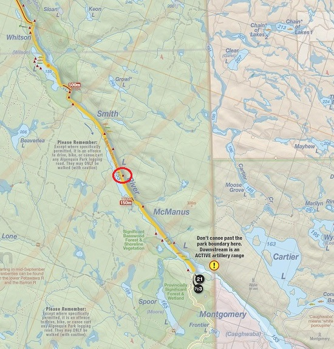
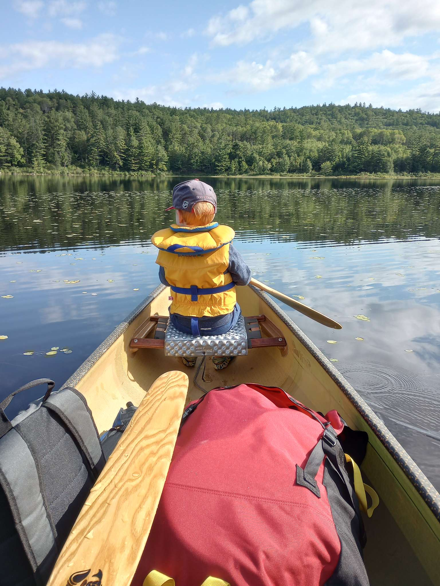
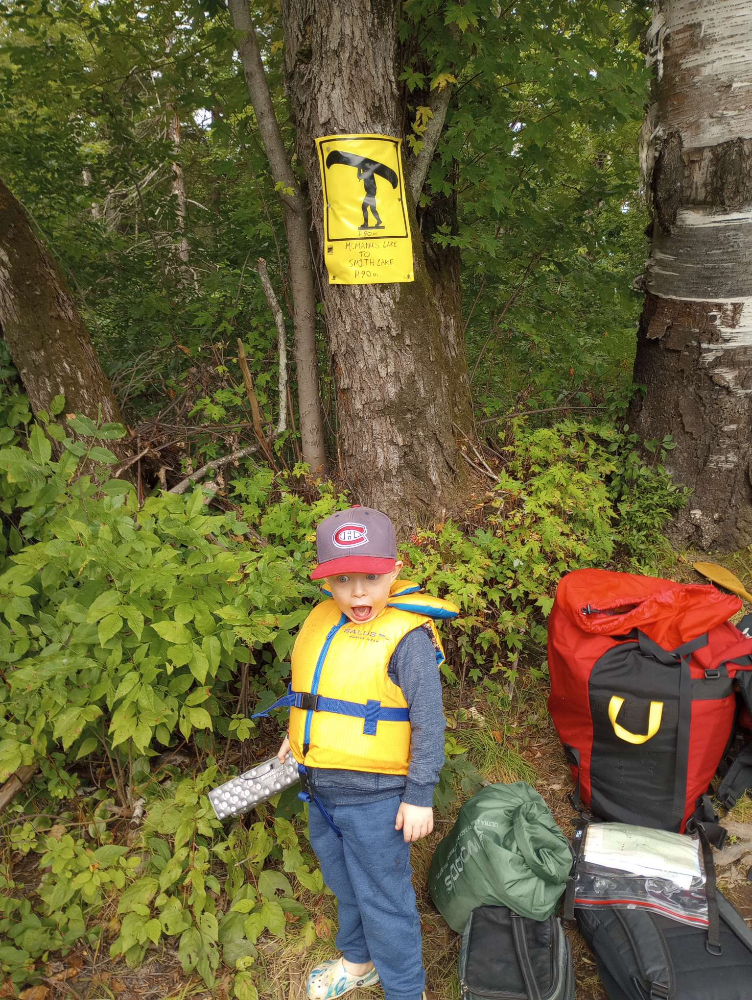
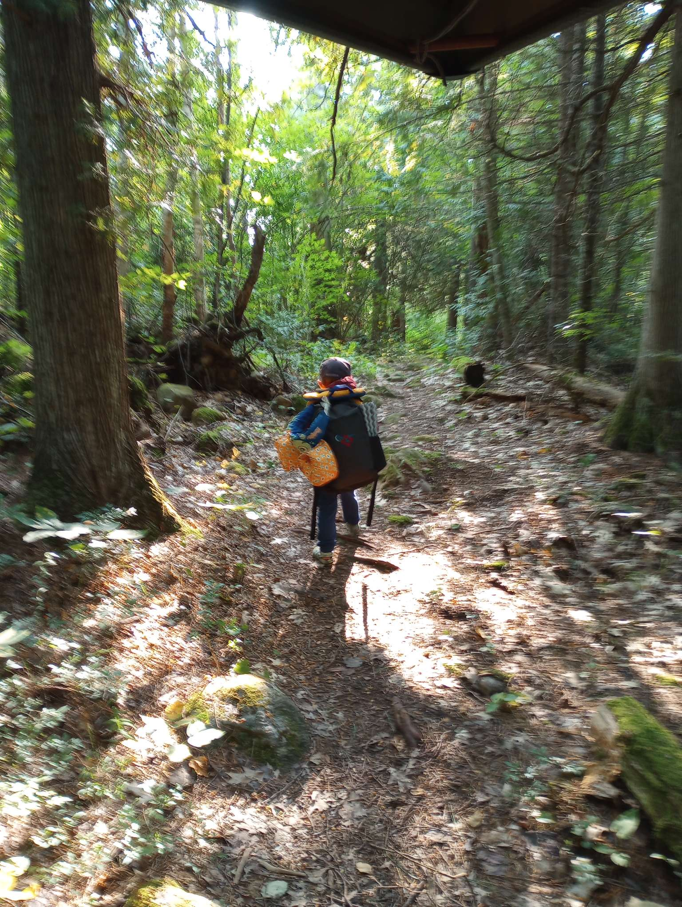
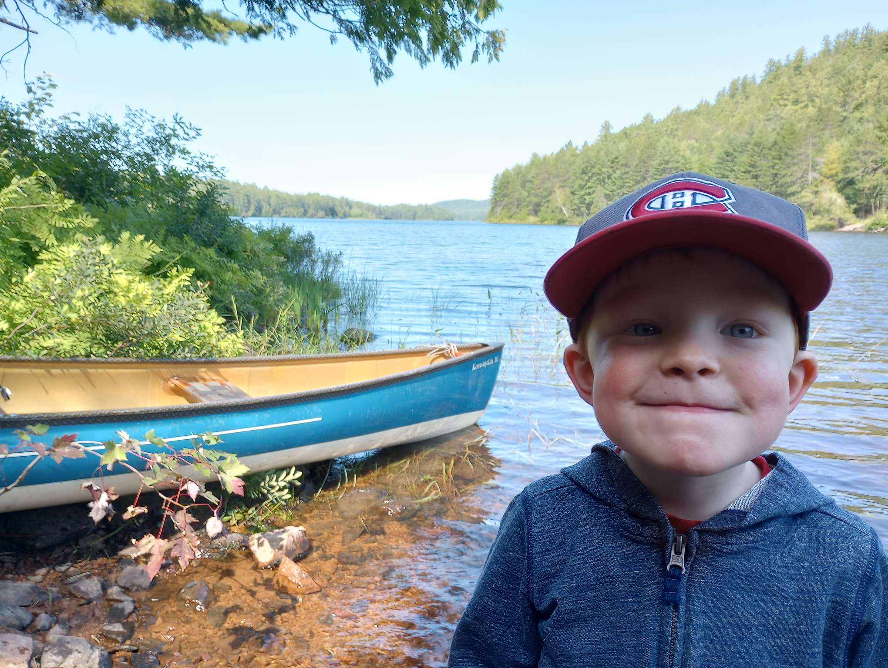
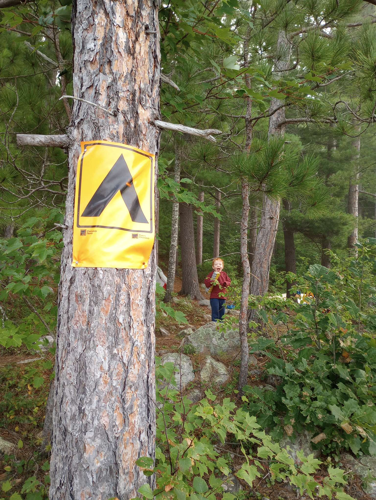
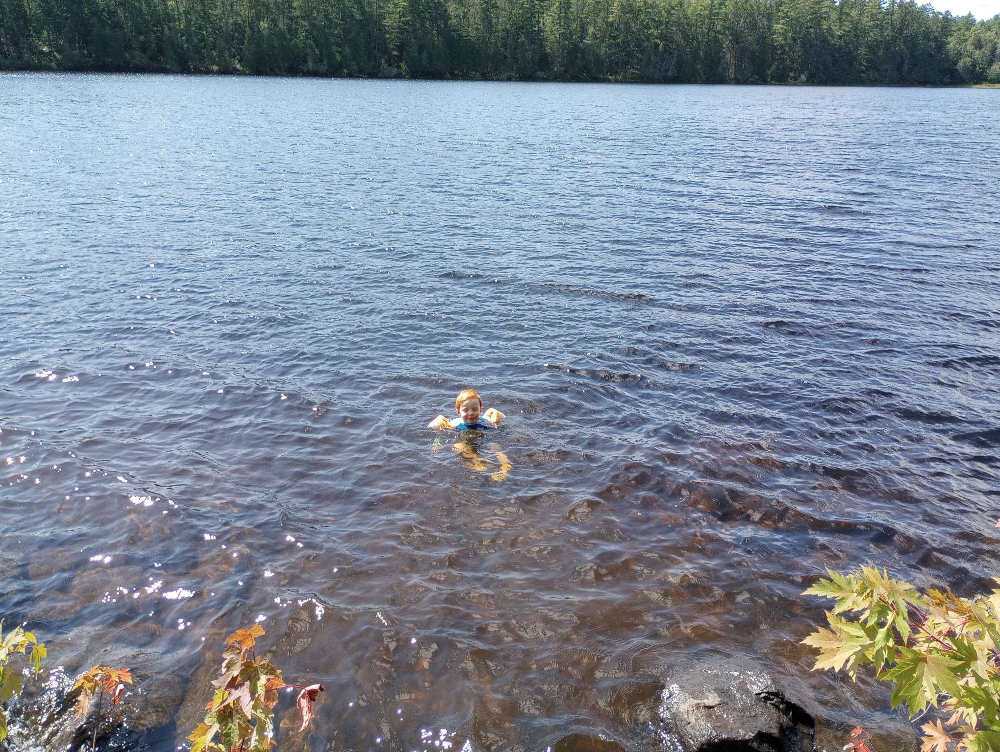
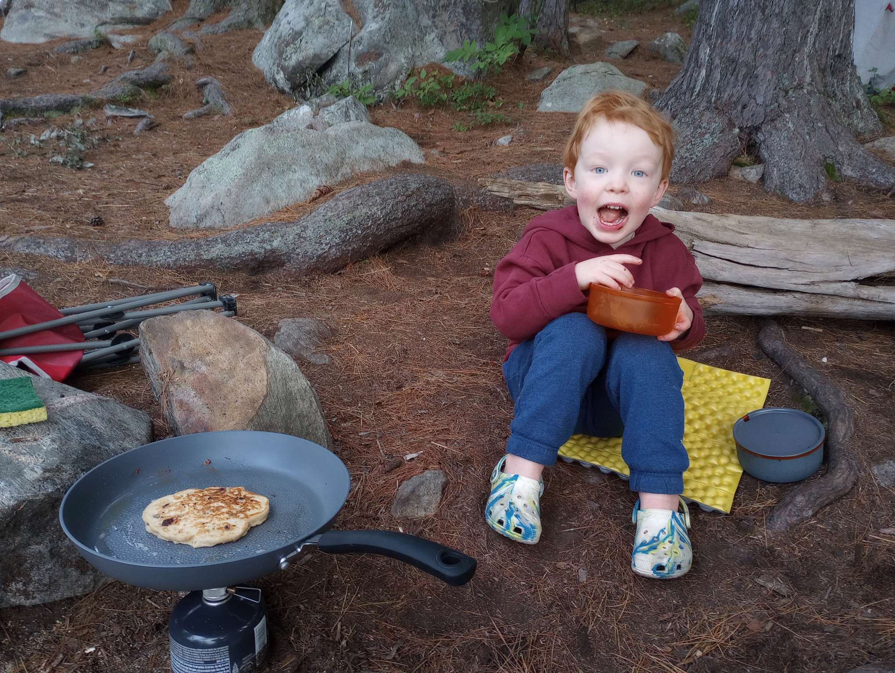
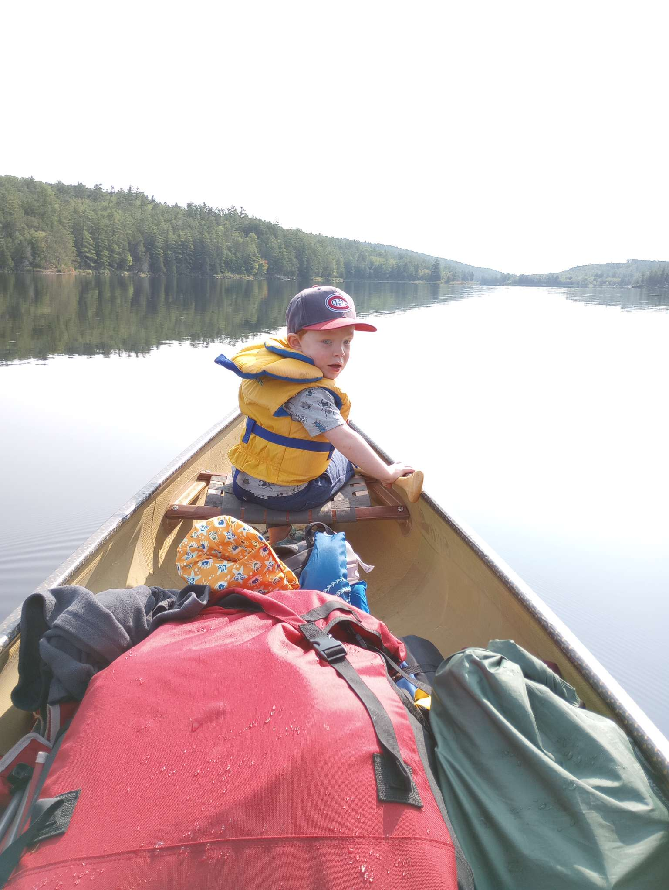

 |
2023 August 31-September 1 - McManus to Smith Lake from Access Point 21.
Day 1 - McManus to Smith Lake (campsite circled in red)
Day 2 - Smith Lake to McManus
Total Portages - 1 (90 m)
This was Gordon's second canoe camping trip, added in a portage this year, slowly building up |
 |
Gordon decided he wanted to sit in the front seat this year and paddle, no complains were heard. |
 |
This year's added challenge was having to do a portage, he was pretty pumped and didn't complain at all, just set on down the trail. |
 |
Down the trail he goes with his backpack (full of his stuff), plus his two lifejackets. 90m portage. |
 |
Still smiling at the end of the portage, which is always a good sign. Had to tell him to shut his mouth while smiling since he usually has it wide open for photos (as can be seen in the other photos). |
 |
We picked the first spot on Smith Lake, Gordon claimed "this site is HUGE!" and wanted to stay, to his credit it was a pretty decent site. |
 |
A nice rock to have a scenic lunch and a beverage, referred to as "the Point" during the trip. |
 |
Nice weather, so we had a dip in the river/lake, pretty cold but plenty refreshing, Gordon had a hot chocolate to warm up after the swim. |
 |
Had a good night and a nice pancake breakfast in the morning, I cooked them a lot better this year as compared to last. |
 |
Paddling home on the second day, next year Gordon wants to stay for 2 days, but he was also excited to head home as Grandma and Grandpa were coming up this weekend. |
 |
Arriving back at the access point on McManus. We had another awesome trip and the portage didn't phase Gordon at all. Good progress was made on the Gordon-Daddy camping trip progression, next year we'll have to try 2 nights or a few more portages. Very proud of him. |